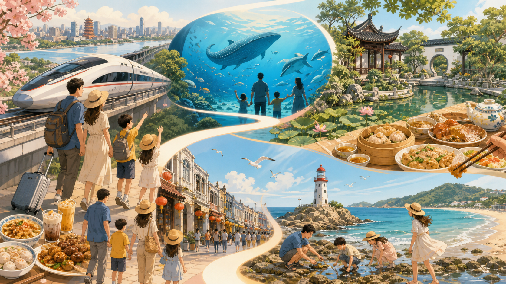

D18 月 2 日 周日
武汉到珠海横琴
武汉到珠海横琴
高铁南下，到长隆先安顿下来


上午
参考 G1003：武汉 07:31 出发，11:54 到广州南。
下午
建议广州南约 12:30 专车直达横琴，预计 15:00 左右入住；比继续换乘城际更适合带孩子和行李。
晚上
酒店泳池、儿童区或横琴商圈简单晚餐，不安排重体力。

选一个目的地，马上查看这一站最值得期待的画面、交通与餐食。

这不是赶景点打卡的路线，而是把孩子喜欢的动物、海边、花草，和大人期待的顺德菜、潮汕美食放进同一条线里。节奏按“上午玩、下午休、晚上吃好”来设计。


推荐顺序是武汉到广州南后先去珠海长隆，再回顺德住一晚，之后转向粤东汕头和南澳岛。顺德不是去汕头的最短路径，但作为一晚美食停靠很值得；不建议顺德晚餐后连夜赶汕头。
高铁南下，选择上午出发，下午抵达珠海横琴入住。
城际或专车接驳。带孩子和行李时，专车更轻松。
长隆玩完后降速，去顺德吃饭、逛园林、住一晚。
从广州/深圳方向中转去潮汕，汕头住两晚后包车上南澳岛。
返程优先飞机，更省力；如果票价太高再看高铁中转。
每一天都留了休息空间。广东 8 月炎热，下午尽量安排午休、室内或低强度移动，晚上再吃饭散步。
参考 G1003：武汉 07:31 出发，11:54 到广州南。
建议广州南约 12:30 专车直达横琴，预计 15:00 左右入住；比继续换乘城际更适合带孩子和行李。
酒店泳池、儿童区或横琴商圈简单晚餐，不安排重体力。


9:30 前入园，先去鲸鲨馆、企鹅馆、北极熊馆等室内大馆。
看白鲸、海豚、海狮剧场，最热时段用餐和休息。
巡游和烟花表演是孩子记忆点，提前找视野位置。


睡到自然醒，酒店早餐、泳池，或半日补飞船乐园。
横琴专车去顺德大良，约 2 小时，入住后休息。
顺德晚餐：鱼生、桑拿鸡、烧鹅、双皮奶。建议提前订位。


清晖园看岭南园林；如果孩子更想看花草，可换顺峰山公园。
大良午餐或甜品收尾：双皮奶、伦教糕、煲仔饭。
约 14:00 专车去广州南；参考 G6329：16:46 出发，19:54 到汕头，入住后安排夜粥。


小公园开埠区、骑楼街区，感受汕头老城和港口城市气质。
酒店午休，避开高温；傍晚去海滨路或广场轮渡。
大人少量尝生腌，孩子吃砂锅粥、蒸海鲜、炒粿条等熟食。


包车从汕头去南澳岛，先看长山尾灯塔和南澳大桥视角。
入住青澳湾，午休后去沙滩、北回归线广场自然之门。
如潮汐合适，安排亲子赶海；否则改为海边玩沙和晚餐。


海边散步或补一个短赶海，随后退房。
回汕头市区采购伴手礼：牛肉丸、单丛茶、腐乳饼、沙茶酱。
揭阳潮汕机场飞武汉，优先 16:00 后、行李额充足的航班。
四个地方的气质很不一样：长隆是孩子的高光，顺德是美食和园林，汕头是潮汕城市烟火，南澳岛负责海风和自然体验。


鲸鲨、企鹅和剧场，是孩子的主场。
吃一席好菜，也看岭南园林。
骑楼老城与潮汕夜宵相遇。
灯塔、沙滩、海风和赶海。
顺德适合吃鱼生、河鲜和顺德菜；如果想吃海鲜、生腌、海岛风味，汕头和南澳更合适。孩子全程以熟食为主。


虾、蟹和贝类以酱油、蒜、辣椒、香菜等腌渍，追求鲜、嫩和浓烈的海味。安排在汕头市区晚餐，比在顺德吃海鲜更符合地域特色。


| 地点 | 推荐吃什么 | 建议 |
|---|---|---|
| 顺德晚餐 | 鱼生、桑拿鸡、烧鹅、拆鱼羹、双皮奶 | 提前订猪肉婆、龙的酒楼、顺峰山庄等；鱼生大人尝，孩子吃熟菜。 |
| 汕头市区 | 牛肉火锅、砂锅粥、卤鹅、蚝烙、粿条 | 安排完整一晚，别赶着吃。 |
| 潮汕生腌 | 生腌虾蟹贝类 | 只选口碑稳、翻台快的店；小朋友不吃，大人少量尝鲜。 |
| 南澳岛 | 熟海鲜、紫菜炒饭、鱼丸汤 | 海岛当天吃熟海鲜更稳，别打包生鲜长途带。 |
| 伴手礼 | 适合买 | 提醒 |
|---|---|---|
| 潮汕牛肉丸/鱼丸 | 真空冷链装 | 返程当天买，确认保存条件。 |
| 凤凰单丛 | 小罐茶礼盒 | 轻便、不怕压，适合送人。 |
| 糕饼 | 腐乳饼、绿豆饼、束砂 | 看保质期，别买太散装。 |
| 调味 | 沙茶酱、鱼露、老香黄 | 托运时注意密封防漏。 |
两大两小可以优先看家庭房、亲子房、双床房，订前确认儿童早餐、床宽、是否可加床。以下价格为暑期预估。


离海洋王国近，亲子氛围强，适合第一次带孩子去长隆。
约 1800-3000 元/晚新、主题感强，可搭配飞船乐园，适合喜欢海洋和太空元素的孩子。
约 1800-3200 元/晚度假感和泳池更好，预算更高，适合想住舒服一点。
约 2200-3800 元/晚性价比更好，打车去长隆，适合控制预算。
约 700-1300 元/晚品质稳，适合家庭，去大良、北滘、顺峰山都比较方便。
约 900-1600 元/晚老牌五星，房间面积通常更友好，适合一间房住得宽松。
约 700-1300 元/晚吃饭和逛老城方便，晚餐后步行回酒店更轻松。
约 500-1000 元/晚晚上有地方遛娃，选择多，价格弹性大。
约 500-1100 元/晚品牌稳定，适合家庭入住，打车去美食区方便。
约 800-1400 元/晚吃饭、购物、打车都方便，综合体验平衡。
约 700-1300 元/晚老城氛围好，适合散步拍照，但要仔细看房间面积。
约 450-900 元/晚南澳岛首选，离沙滩近，适合玩水、玩沙、清晨看海。
约 900-1800 元/晚这版不保留自驾方案。带两个孩子跨省旅行，省力比省一点交通费更重要。
| 段落 | 推荐方式 | 预估时间 | 费用预估，四人 |
|---|---|---|---|
| 武汉 → 广州南 | 当前优先参考 G1003：07:31 武汉出发，11:54 到广州南 | 约 4 小时 23 分 | 约 1800-2600 元 |
| 广州南 → 横琴长隆 | 专车最省心；预算优先可城际转珠海/横琴 | 约 2-2.5 小时 | 约 400-900 元 |
| 横琴长隆 → 顺德 | 专车/商务车 | 约 2 小时 | 约 500-900 元 |
| 顺德 → 汕头 | 回广州或深圳方向中转高铁 | 约 4-6 小时，含接驳 | 约 900-1600 元 |
| 汕头 → 南澳岛 → 揭阳潮汕机场 | 包车 1-2 天，覆盖环岛、赶海和送机 | 灵活安排 | 约 1500-2500 元 |
| 揭阳潮汕机场 → 武汉 | 飞机优先，选 16:00 后、行李额充足航班 | 约 2 小时飞行，另加机场时间 | 约 2200-5000 元 |
预算按四人出行、暑期、尽量一间房估算。长隆官方酒店和南澳海景房会是主要波动项。
横琴住非最高价房型，顺德和汕头选品质稳定酒店，长隆只玩海洋王国。
| 交通/接驳 | 约 7300-11500 |
| 住宿 6 晚 | 约 8500-12500 |
| 门票 | 约 1200-2200 |
| 餐饮 | 约 5000-7000 |
| 伴手礼 | 约 1500-3000 |
| 合计 | 约 23500-36200 |
长隆住官方酒店，关键段都用专车/包车，餐饮和酒店更宽松。
| 交通/接驳 | 约 9000-13500 |
| 住宿 6 晚 | 约 12000-17500 |
| 门票/加项 | 约 2200-4500 |
| 餐饮 | 约 6500-9000 |
| 伴手礼 | 约 2500-4500 |
| 合计 | 约 32200-49000 |
广东 8 月要把防晒、防暑、防雨和肠胃安全放在前面。赶海和生腌都很好玩，但都需要留一点谨慎。
证件：身份证、儿童身份证/户口本、医保卡。
防晒：儿童防晒霜、遮阳帽、墨镜、冰袖。
防暑：水杯、便携风扇、口服补液盐。
雨具：折叠伞、一次性雨衣，长隆也用得上。
药品：退烧药、肠胃药、晕车药、创可贴、碘伏棉签、驱蚊液。
海边：泳衣、沙滩鞋、防水手机袋、替换衣物、密封袋。
长隆：轻便背包、小零食、纸巾、湿巾、折叠坐垫。
购物：伴手礼尽量返程当天买，液体调味品做好密封托运。